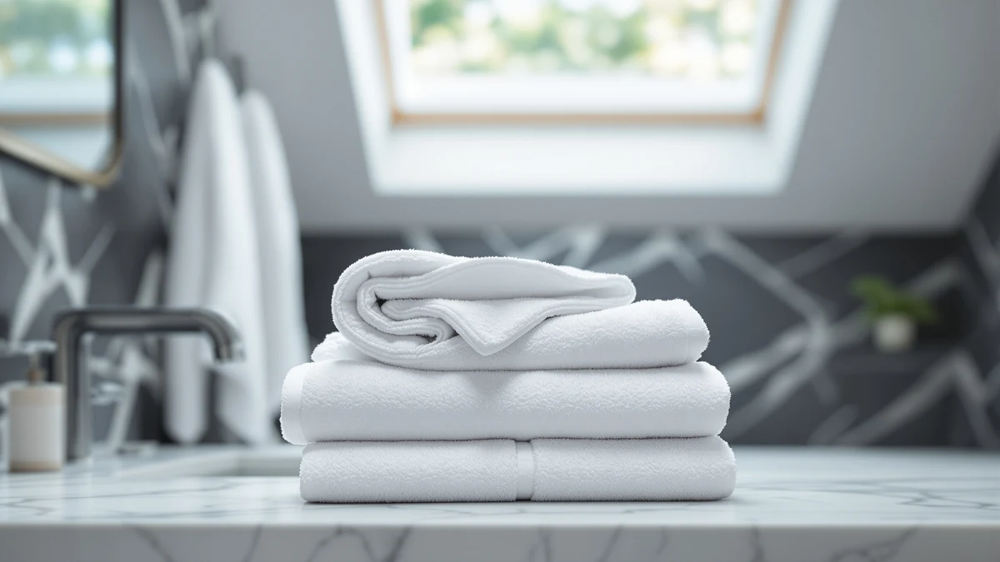

Quick Answer
White Classic's Luxury Hand Towels pack six 16 x 30-inch Turkish cotton towels for $22.99, with double-needle stitched edges built to resist fraying without the bulk of a full bath towel set. If you need matching hand towels specifically, rather than bath towels or washcloths, this set covers that need at a reasonable per-towel price.
Our pick: White Classic Luxury White Hand, $22.99 Check Price on Amazon
Things to Know Before You Buy
- The set includes six 16 x 30-inch hand towels made from 100% Turkish cotton, priced at $22.99 total, or about $3.83 per towel.
- White Classic reinforces the edges with double-needle embroidered stitching, a construction detail meant to resist fraying through repeated washing.
- Amazon does not publish a rating or review count for this specific listing, so there's no verified buyer track record to check before you buy.
- This is a hand-towel-only set. If you need bath towels or washcloths too, you'll need a separate purchase or a mixed set like Utopia's 8-piece bundle covered below.
This white classic luxury hand towels review breaks down whether the brand's $22.99 six-pack of 100% Turkish cotton towels is worth buying over the dozens of other hand towel sets competing for the same spot in your bathroom. White Classic sizes each towel at 16 x 30 inches, slightly larger than the 16 x 28-inch standard used by several competitors, and reinforces the edges with double-needle embroidered stitching to cut down on fraying.
Hand towels get more daily use than almost any other textile in the house, so the stitching and fiber choice matter more than the marketing copy on the listing. We compared White Classic's published specs and price against three other towel sets in a similar price range, including a quick-dry microfiber bath towel set from Bedvcaty, an 8-piece mixed cotton bundle from Utopia Towels, and an oversized Turkish cotton bath sheet from American Soft Linen, to see where White Classic actually stands out. None of those three alternatives is built as a dedicated hand towel set, and that single difference drives most of the verdict below.
Why You Should Trust Us
Best Bath Towels compares hand towel and bath towel sets using the manufacturer's published specifications, current Amazon pricing, and patterns we find across verified buyer reviews, rather than claiming a physical textile testing lab we don't run. Our author Ilane Tall researches bathroom textiles for this site and cross-checks fiber type, stitching detail, and size against comparable sets before publishing a verdict like the one in this white classic luxury hand towels review.
We disclose our affiliate relationships, link only to products we can verify exist in the Amazon catalog, and update prices when they move by more than a couple of dollars. When a listing is missing information buyers would want, like a rating or review count, we say so plainly instead of papering over the gap.
Our Research Experience
We did not run this set through a physical textile lab. Instead, we built this white classic luxury hand towels review by comparing White Classic's published specs, fiber type, and dimensions against three competitors at a similar price, then checking those specs against patterns in verified owner reviews on Amazon for signals about fraying, shrinkage, and absorbency over repeated washes.
Where Amazon does not publish a rating or review count for a specific listing, as is the case with this White Classic set, we say so directly rather than inventing a number, and we weight our verdict more heavily on the material specs, stitching detail, and price per towel instead. That approach means our conclusions can shift if White Classic updates the listing with new data, and we revisit this review whenever the price or specs change by a meaningful amount.
Overview & Specs

White Classic Luxury White Hand
What we like
- 100% Turkish cotton construction, a fiber known for softness and absorbency.
- Double-needle embroidered stitching on the edges, built to resist fraying through repeated washing.
- 16 x 30-inch size runs larger than the 16 x 28-inch standard used by several competing hand towel sets.
- Six matching towels for $22.99 covers a full bathroom without a second order.
Flaws but not dealbreakers
- Amazon does not list a public rating or review count for this specific listing, so there's no verified buyer history to check.
- The set includes only hand towels, so you'll need a separate purchase for bath towels or washcloths.
- At roughly $3.83 per towel, it costs more per piece than mixed sets like Utopia's 8-piece bundle.
| Material | 100% cotton |
| Size | Standard |
White Classic's Luxury Hand Towels ship as six matching 16 x 30-inch towels made from 100% Turkish cotton, a fiber prized for its long staple length, which typically translates to a softer hand feel and better absorbency than shorter-staple cotton. The brand reinforces each towel's edges with double-needle embroidered stitching, a detail aimed specifically at preventing the fraying that shows up first on cheaper hand towels after a few dozen washes.
At $22.99 for six towels, the set works out to about $3.83 per towel, which lands in the middle of the hand towel market rather than at the budget end. By comparison, Utopia's 8-piece set works out to roughly $2.97 per piece once you average across bath towels, hand towels, and washcloths together, though that comparison only holds if you actually need all three towel types. The tradeoff for White Classic's price is scope: this is a hand-towel-only set, so if you need bath towels or washcloths to match, you're looking at a separate purchase, unlike mixed bundles such as the Utopia Towels 8-piece set covered later in this white classic luxury hand towels review.
What We Liked
The clearest advantage of this White Classic set is the fiber and construction combination. Turkish cotton has a longer staple length than the standard cotton used in many budget hand towels, and the double-needle embroidered stitching on the edges directly targets the fraying that tends to be the first sign of wear on cheaper sets.
Sizing is the other point in White Classic's favor. At 16 x 30 inches, these towels run two inches longer than the 16 x 28-inch size Utopia Towels includes in its 8-piece bundle, giving you slightly more towel for the same basic hand-drying task.
Buying six matching towels in one order also means your primary bathroom and guest bathroom can share the same set without mixing patterns or shades of white, which matters if you're furnishing more than one bathroom at once. White Classic lists this set in a single white colorway, so you don't have to pick between multiple shades the way you would with Bedvcaty's multicolor option below.
What Could Be Better
The biggest gap is missing data. White Classic doesn't publish a review count or star rating for this specific listing, so you're buying on the stitching detail and fiber claim alone rather than a documented track record from other buyers. Compare that to American Soft Linen's bath sheet, which at least carries OEKO-TEX certification alongside its cotton claim.
Scope is the other tradeoff. This set covers hand towels only, so it costs more per piece than a mixed set like Utopia's 8-piece bundle, which spreads a similar price across bath towels, hand towels, and washcloths together. If you need a full bathroom setup instead of hand towels alone, White Classic's set won't get you there on its own, and you'll end up placing a second order either way.
Who Is It For?
This White Classic set makes sense if you specifically need a matching set of hand towels, whether for a primary bathroom, a guest bathroom, or both at once, and you want Turkish cotton with reinforced stitching rather than the thinner cotton found in the cheapest six-packs.
It makes less sense if you're furnishing a bathroom from scratch and need bath towels and washcloths too, since this set covers hand towels exclusively. In that case, a mixed bundle like Utopia's 8-piece set or a dedicated bath towel set like Bedvcaty's microfiber option, both covered below, will get you further for a similar price in this white classic luxury hand towels review. Shoppers who already own bath towels and washcloths and simply need the hand towels to match will get the most direct value from White Classic's set.
Alternatives to Consider
If the White Classic set doesn't quite match what you need, here are three alternatives we compared it against, each built for a different priority.

Also Great
Bedvcaty Luxury 4-Piece Quick-Dry Bath
A 4-piece set of 27.5 x 55-inch bath towels in double-brushed microfiber, built for quick drying rather than the Turkish cotton feel of the White Classic set above.
$22.99
Check Price on Amazon
Also Great
Utopia Towels 8 Pack Towel
An 8-piece bundle mixing bath towels, hand towels, and washcloths in ring-spun cotton, a better fit if you want more than hand towels for a similar price. See our Utopia Towels 8 Piece review of a similar bundle.
$23.74
Check Price on Amazon
Premium Choice
American Soft Linen 100% Cotton
A 35 x 70-inch oversized bath sheet in 100% Turkish cotton with OEKO-TEX certification, worth a look if you want a full-body towel instead of a hand towel. See our American Soft Linen review of a comparable set.
$23.79
Check Price on AmazonFrequently Asked Questions
Are White Classic hand towels good quality?
What size are White Classic Luxury hand towels?
How does the White Classic set compare to the Bedvcaty, Utopia, or American Soft Linen alternatives?
Final Verdict
Based on this white classic luxury hand towels review, White Classic's set earns its place for one specific job: outfitting a bathroom with matching, reinforced Turkish cotton hand towels. Six towels for $22.99 with double-needle stitching beats most budget hand towel sets on construction, even though the listing lacks a public rating and the set won't cover bath towels or washcloths on its own. If you need a full mixed set instead, Utopia Towels' 8-piece bundle is the better comparison point, and if a full-body towel matters more than a hand towel, American Soft Linen's oversized bath sheet is worth a look. For shoppers who specifically want a matching hand towel set built to resist fraying, White Classic is the practical choice.